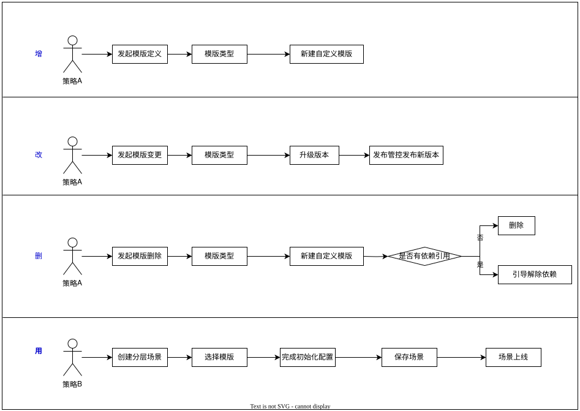
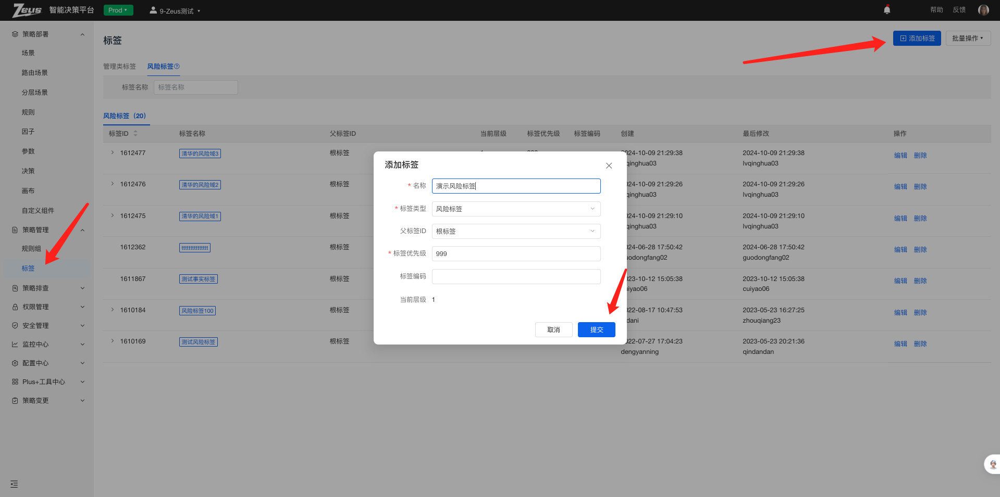
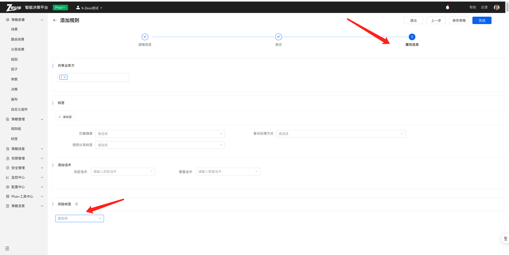
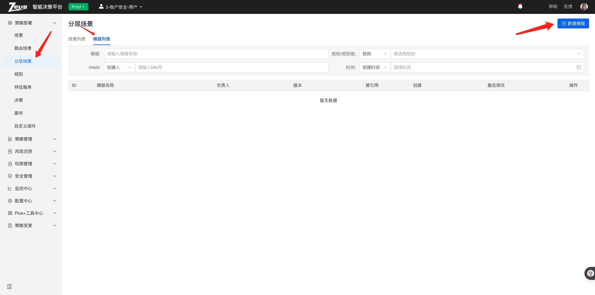
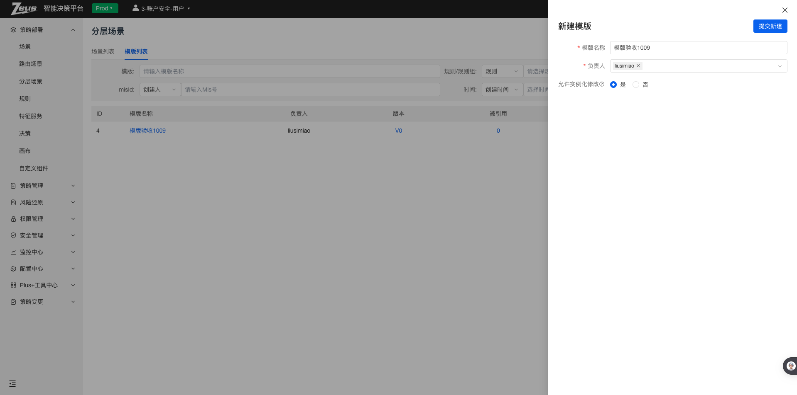
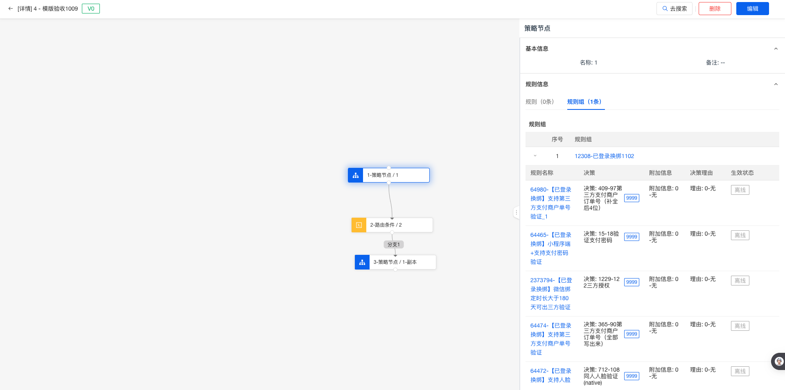
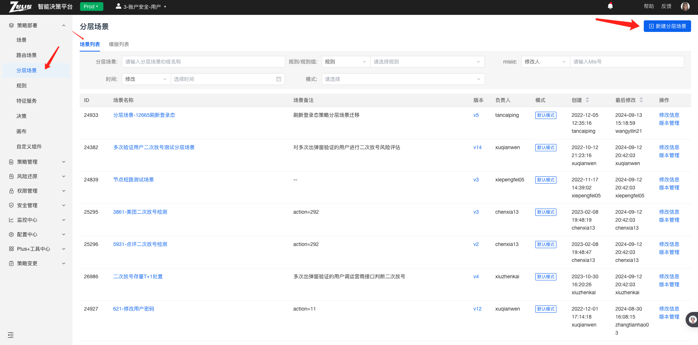
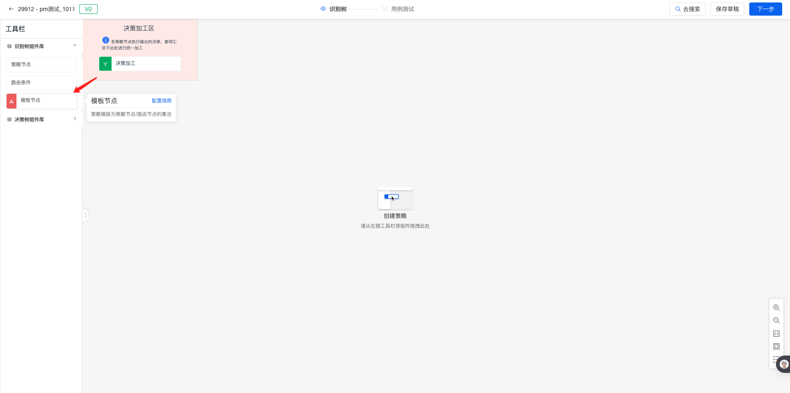
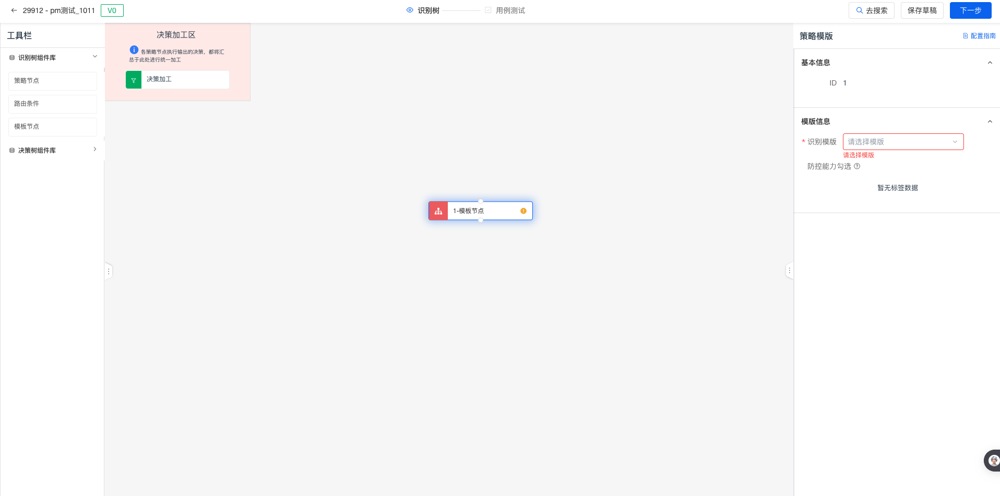
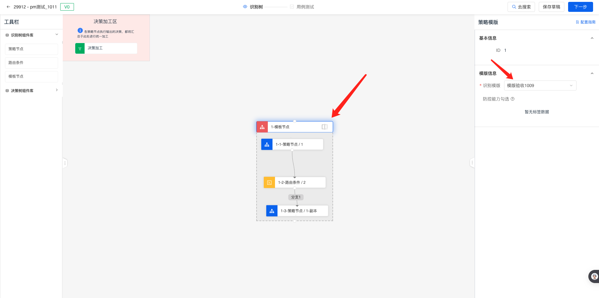

分层场景识别模板使用说明
内安策略使用说明参考：20241016- 策略模版使用文档说明书
一、识别模版解决什么问题
解决通用策略逻辑复用问题。支持类决策流模版能力，沉淀通用业务语义多层级复杂策略逻辑，快速实例化至分层场景应用。
- 通用策略在多个场景下在布控时，使用模版一次引用提升策略管理&布控效率
- 支持模版内部分策略在特殊业务下无需生效，满足差异化布控诉求
- 辅助通能标准沉淀，以快速支持业务活动展开。
二、用户旅程

三、操作指南
STEP 0 -- 前置准备工作：给规则打上风险标签（标识规则的防控能力）
|
说明 |
示意图 |
|---|---|
|
什么是风险标签
执行命中后，能向下游传递这部分信息，以对风控结果做进一步有精细化运营的诉求。参考文档：说明：风险标签（infocode） 规则打上风险标签，在模版使用的时候会有什么效果？
|
  |
STEP 1 -- 创建模版
- 左侧菜单【策略部署】-【分层场景】，选择页面【模版列表】TAB

-
填写模版需要的相关信息
a）负责人：可设定多名，限制仅负责人可对模版进行删除（后续会支持仅负责人对模版进行编辑）
b）允许实例化修改：即是否允许该模版被使用到分层场景里之后，手动对模版内的内容进行编辑 或 通过标签批量选择部分策略进行使用
-
完成模版配置，方式同分层场景，可参考分层场景配置说明

STEP 2 -- 在分层场景里使用模版
- 左侧菜单【策略部署】-【分层场景】，选择页面【场景列表】TAB，新建场景或选择已有场景。分层场景的选择请参考说明：分层场景

-
选择识别树-左侧工具栏中策略模版节点，选择策略模版节点拖动进分层场景拓扑图


- 完成模版信息填写，选择需要使用的识别模版并勾选需要使用的防控标签，若规则无标签选择后对应策略状态自动与模版内状态保持一致。且模版内策略如果修改，此处实例化分层场景中的策略会同步修改。

- 手动对需要特殊调整的策略进行修改。可修改范围：决策/决策理由/附加信息。手动特殊调整后，该条策略将不随模版内策略修改而同步。
四、特殊同步逻辑说明
原则一：单标签纬度「标签勾选优先级 大于 手动修改优先级」
当风险标签未勾选时，用户手动修改策略的状态均无效（后端仍然全部置为离线）；当风险标签勾选时，且用户有手动修改策略状态，取用户手动修改的状态为准。例如：策略A有 1/2 两个标签，策略B有1/3 标签，勾选了 1 标签，这时候 AB都被选中，然后手动把B置为离线，再勾选 3 标签，B应该此时仍然被选中
原则二：若模版内存在规则无风险标签，这条策略可以任意手动修改。
原则三：如果变更一条规则的风险标签，则这条策略默认离线。需要进入分层场景中勾选新的风险标签